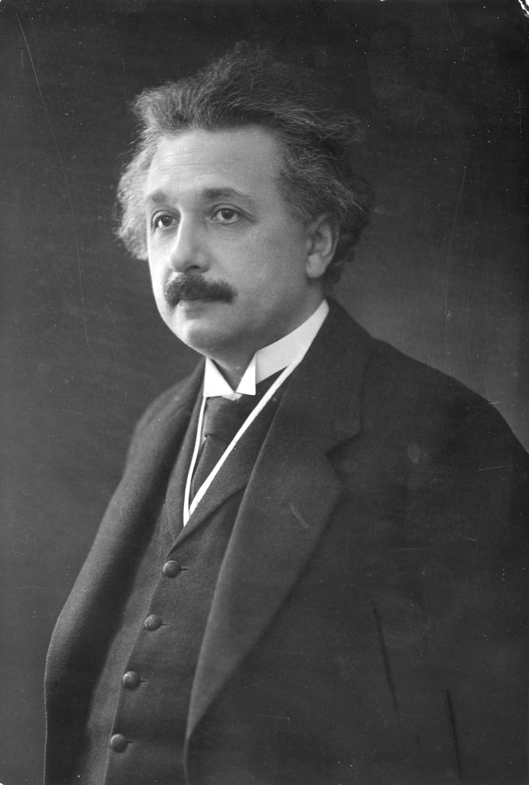

Albert Einstein
(E=mc²)

Phycicist, Scientist (1879-1955)
10 Things You Didn't Know About Albert Einstein:
Einstein didn’t actually begin speaking uninhibitedly until age 7, which is much later than normal.
His brain was stolen.
He was offered the presidency.
He loved to smoke.
He literally changed science in one year.
He co-designed a refrigerator.
His relationships were odd and tumultuous.
He loved to sail.
He landed on adolf hitler’s “wanted list”.
He was held hostage only to mediate it.
"The important thing is not to stop questioning. Curiosity has its own reason to existing."
–Albert Einstein
If you have time, you should read more about this incredible human being on his
Wikipedia entry.